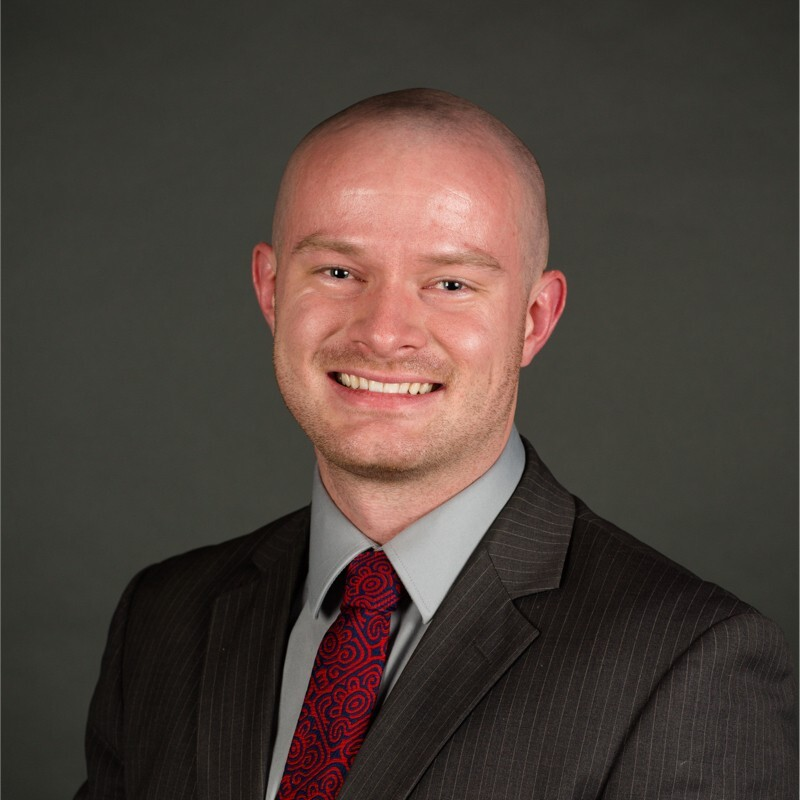

Earning the MPA degree at BYU will greatly increase my value to the Internal Revenue Service and to the extent to which I will assume greater levels of professional responsibility in the future with this organization. I seek the fullest immersion experience possible in the in-depth study of efficient utilization of resources, harnessing the power of tools, systems, processes, and most of all human resources, to assist the IRS at providing the most efficient services possible. Working for the federal government wasn’t always my plan, so allow me to explain how I came to be in the position I am today.
When I transferred from UVU to BYU, I was a disciplined student who made academic success a priority as graduate school was the desired outcome following my undergraduate studies. My BYU career commenced as a non-matriculated visiting student summer term of 2017. To demonstrate my potential to the admission committee, I chose difficult courses that would showcase my intellectual aptitude as an enrolled student; therefore, I enrolled in ECON 110 and SPAN 321. Performing well in these classes, especially ECON 110, gave me confidence and more importantly, proved to admissions that I could handle the rigor of BYU coursework. After completion of summer term, I officially applied as a transfer student and was accepted. Subsequently, I applied for a transfer student academic scholarship and received a ½ tuition scholarship for my previous academic performance. I was thrilled to be officially enrolled at BYU and have assistance with my financial responsibilities. Although I was as confident as ever, I had no clue that physical injuries would soon place my academic career in peril and put my graduate school aspirations at risk.It was the beginning of winter semester 2019. I had completed several semesters successfully at BYU and I was excited for a new school year. Furthermore, I had been invited to practice with the BYU men’s soccer team. Soccer had always been a passion of mine and I had been successful in high school making the Utah 5A All-State team selection two years in a row. Prior to practicing with the men’s team, I had been struggling with severe back pain ever since I had returned from my religious mission in Peru. After one practice with the team, the pain was so bad that I decided to finally visit a doctor. At the conclusion of several appointments and tests, I was diagnosed with advanced DDD or (Degenerative Disc Disease) and I had a herniated disc that was causing sciatic nerve pain down my legs. As per the recommendations from the doctor, I had surgery to repair the herniation and decelerate the disc degeneration. Just as my dreams of making the soccer team had started, they were finished.
My academic career quickly became an area of concern. I had surgery at the very beginning of the semester and missed substantial class time. Although my teachers were helpful in making accommodations when possible, I fell behind in my studies and my grades suffered as a result. It was difficult to sit and focus in class for long periods of time without immense pain. Consequently, I finished the semester with a 2.93 GPA, my lowest ever. At the end of that semester, I began to have complications from the surgery. I tweaked my back during exercise, which required more intense physical therapy. Meanwhile, the next semester had begun, and I was doing even worse than my previous semester.
In hindsight, I should have taken a year off, which I contemplated at the time, but I was determined to graduate as fast as possible. Battling though physical pain from surgery and emotional ruin from failing grades to broken soccer dreams, led to my new all-time low, a 1.80 GPA. After going through those two semesters with these struggles, I knew salvaging my academic career would take a herculean effort. I spent that summer to focus 100 percent on my recovery and get both physical and emotional help. I planned and revised educational, physical, and spiritual goals. From these failures, I learned that taking on challenges by yourself, while possible, takes up valuable time. If I had been more proactive in seeking help from others, I could have avoided possible pitfalls that delayed my personal progress. I have now formed a support group that keeps me accountable in educational, physical, and spiritual pursuits.
During this time, COVID had also brought its own set of challenges; however, after my previous troubles, I was better equipped with the tools and resources to be more efficient in all aspects of my life. I overcame myself and finished my last two semesters with a 4.00 and 3.55 GPA. As every dark cloud has a silver lining, I would not have pursued government service as a career, if I didn’t experience all the hardship I did. Soccer was not a major priority as it once was, so my primary focus turned to career development. Through increased participation in extracurricular activities and volunteer work, I began a journey that has led me to be working with the IRS today.
 Helping private corporations partner with non-profits to provide opportunities for those otherwise overlooked – My Public Service PassionWhile I have just begun as a Data Transcriber at a GS-04 level, I look forward to potentially enrolling in the MPA Program to accelerate my progression to management positions at the GS-09 level and beyond. Upon completion of the MPA Program at Brigham Young University, I will continue working with the Internal Revenue Service, increasingly aspiring to leadership positions, such as a Management and Program Analyst, that will allow me to improve efficiency of the department and increase the quality of current business practices. Specifically, I keenly look forward to using my leadership skills, management techniques, and critical thinking to optimally utilize resources in an effective manner.
On the side...
In addition to my public service career, I've always wanted to create my own non-profit. My dream is to start a nonprofit youth soccer club. The club would have boy’s and girl’s teams for several different age groups. Club operations would include training, season games, and tournaments.
I would start this nonprofit because I have been so positively impacted by playing in a youth soccer club. In my youth, soccer was the way that I made most of my friends and it gave me the chance to develop as a person. Playing sports, especially at younger ages, isn’t just about playing but learning interpersonal skills and developing as a leader. Giving youth the opportunity to work in teams while having fun would be a very rewarding experience for me. Starting this nonprofit would enable me to give back for the blessing that I had of playing soccer as a kid.
Highlight Video
I have a love for soccer and would love to help kids learn leadership skills through such recreation.